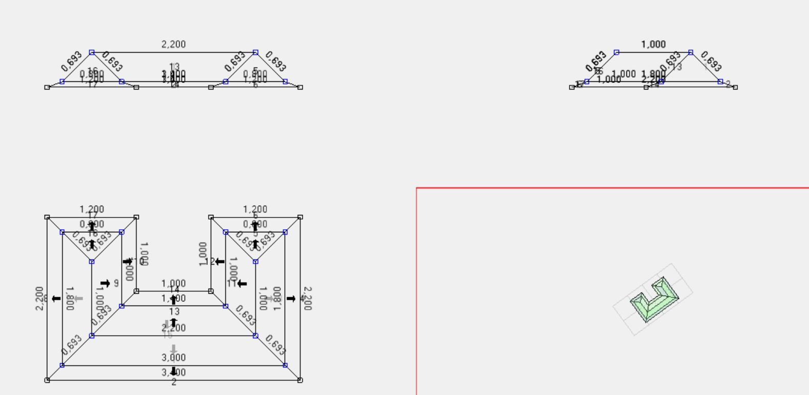
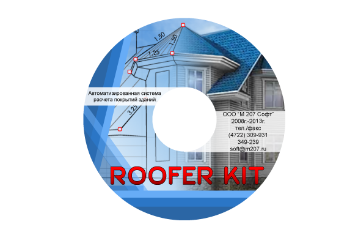

RooferKit
Программный комплекс для раскроя покрывающих материалов. Моделирование кровельной системы или фасада в специализированном эргономичном 3D-редакторе каркасов, точный расчёт и наглядная визуализация конструкции.
Возможности
Моделирование кровельной системы или фасада
- Специализированный эргономичный 3D-редактор каркасов.
- Наглядное трёхмерное представление модели с любого ракурса.
- Автоматическое нахождение граней по каркасу.
- Полноценный откат любых операций в процессе моделирования.
- Расширяемый набор шаблонных «калькуляторов» для быстрого решения распространённых геометрических задач.
- Копирование и вставка элементов модели; перемещение, масштабирование, поворот и состыковка их между собой.
Раскладка материалов по поверхностям
- Автоматическая раскладка листовых и рулонных материалов по скату.
- Поддержка нескольких слоёв материала на поверхности (например, паро-, теплоизоляция и облицовочный материал).
- Визуальное редактирование раскладки материала по грани.
Составление сметы
- Автоматическое составление сметы по материалам, прикреплённым к элементам модели.
- Автоматическое добавление в смету связанных материалов (крепёж, дополнительные слои изоляции и т.д.).
Выходные документы и печатные формы
- Схема кровельной системы или фасада в трёх проекциях и развёртке.
- Плоская проекция каждой грани с опциональным отображением геометрических размеров, раскладки материалов, перехлёстов, крепежа, маркировки листов и т.д.
- Детальная смета.
Интерфейс


